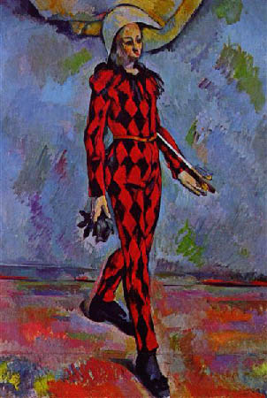

A Hue Attractor/Repulsor
← Back to AppGaHueMa is a web-based image processing tool designed for hue manipulation. A specific hue is set as an anchor point where other colors are pulled towards (attraction) or pushed away (repulsion).

Anchor Hue directly from a pixel.Add shifts each hue relative to the anchor point by a fixed number of degrees. Positive values push hues farther away from the anchor point, while negative values pull hues toward it.
Multiply scales the shortest hue distance between a hue and the anchor point. For example, if a hue is 20° clockwise from the anchor point, a factor of 2 moves it 40° clockwise from the anchor point. Values greater than 1 push hues farther away, while fractional values such as 0.5 pull them closer to the anchor point.
Negative values flip the hue across the anchor point. For example, if a hue is 20° clockwise from the anchor point, a factor of -2 moves it 40° counter-clockwise from the anchor point.
By default, crossing the anchor point is prevented. If a transformation would cause a hue to pass through either the anchor point or its opposite point on the hue wheel, the result is clamped to that boundary instead. This keeps hues from wrapping across the anchor axis.
With negative multiplication, this option causes hues to collapse to a boundary, because negative multiplication is designed to flip hues around the anchor point.
Binomial combines multiplication, power, and additive offset into a single transformation:
M · ΔhP + A
Here, Δh is the signed shortest hue distance from the anchor point, M is the multiplier, P is the power, and A is the additive offset. The distance is transformed first by the power and multiplier, then shifted by the offset.
If P = 1, the transformation behaves like a standard add/multiply operation. If M = 1 and A = 0, there is no change.
Add shifts all hues by a constant angular offset relative to the anchor point. The hue wheel is effectively split at the anchor into two regions, which rotate without changing their internal spacing. Distances between colors are preserved, so the overall color relationships remain intact. With crossing allowed, adding multiples of ±360° produces an identical image.
Multiply rescales the distance of each hue from the anchor point. This expands or compresses the spacing between colors, altering their relative relationships. Values greater than 1 push hues outward (increasing contrast), while values between 0 and 1 pull them inward (reducing contrast).
Power introduces nonlinearity by making the transformation depend on distance from the anchor. Values greater than 1 exaggerate differences. Nearby hues stay close, while distant hues move much farther away. Values between 0 and 1 compress differences, drawing hues into a tighter band around the anchor. Negative values make distant hues move more while closer hues move less.